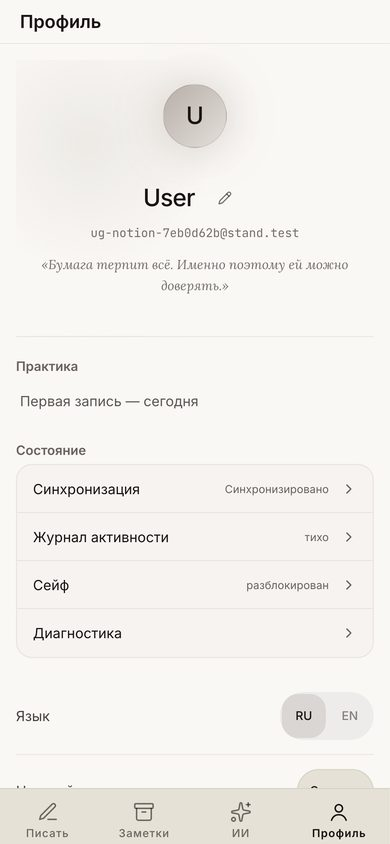
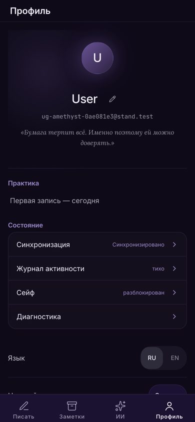
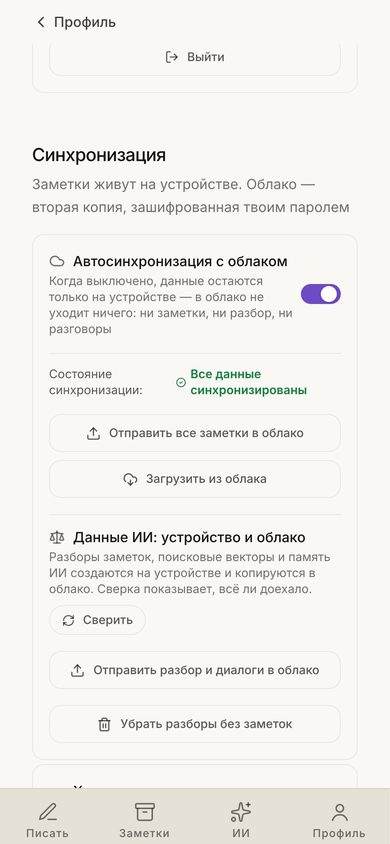
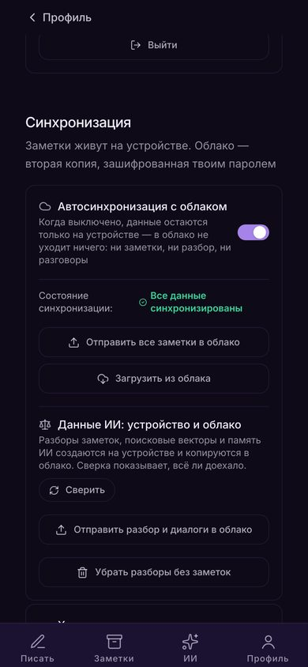

Профиль и настройки
Вкладка Профиль собирает всё, что касается вас как автора и как аккаунта: серию дней, достижения, состояние сейфа и облака, а от неё — настройки.
На этой странице
Что на вкладке
Сверху — короткое состояние: с чего начался сегодня день письма, сколько дней подряд, когда вы впервые здесь. Ниже — группы: практика (серия дней, карта активности, достижения) и состояние аккаунта. Всё это — те же данные, что в профиле на компьютере, только в одну колонку и без боковых панелей.


Строки состояния
- Серия дней — сколько подряд дней вы писали. Дни без письма не обрывают серию навсегда: есть «заморозки», которые берегут счёт.
- Достижения — вехи вроде «10 сессий» или «первая сотня слов». Их можно сбросить, если хочется начать заново.
- Сейф — строка показывает, открыт сейф или заперт. Запертый сейф — это не ошибка: заметки на устройстве целы, просто их содержимое сейчас не читается.
Настройки
Настройки открываются списком разделов: аккаунт, безопасность, облако и синхронизация, ИИ и приватность, интерфейс (тема, шрифт, язык), резервная копия, удаление.
Тема меняется сразу и перекрашивает всю страницу одним плавным переходом; если в системе включено «уменьшить движение», перехода нет. Язык интерфейса меняется во всех открытых вкладках сразу.


Сейф и пароль
Один пароль — вход в аккаунт, им же шифруются заметки. От него зависит код восстановления: единственный способ открыть зашифрованные заметки, если пароль потерян. Код показывают один раз при настройке, и на телефоне тоже — даже если облако не включено.
Если пароль сброшен по почте, а сейф на этом телефоне ещё обернут вокруг старого пароля, приложение предупредит и предложит сохранить новый код. Просто так оно сейф не переложит.
Данные, копия и удаление
- Резервная копия — архив всех данных; «Скачать заметки в JSON» сохраняет только заметки.
- Выйти — выход из аккаунта; на общем телефоне можно выйти и стереть свои данные с этого устройства, чужие аккаунты при этом не трогаются.
- Удалить аккаунт — требует пароля и необратимо; стираются заметки в облаке и на устройстве, история, данные шифрования и данные ИИ. Сначала сделайте копию.
Подробно про шифрование, код восстановления и удаление — «Пароли и шифрование» и «Резервные копии и импорт».